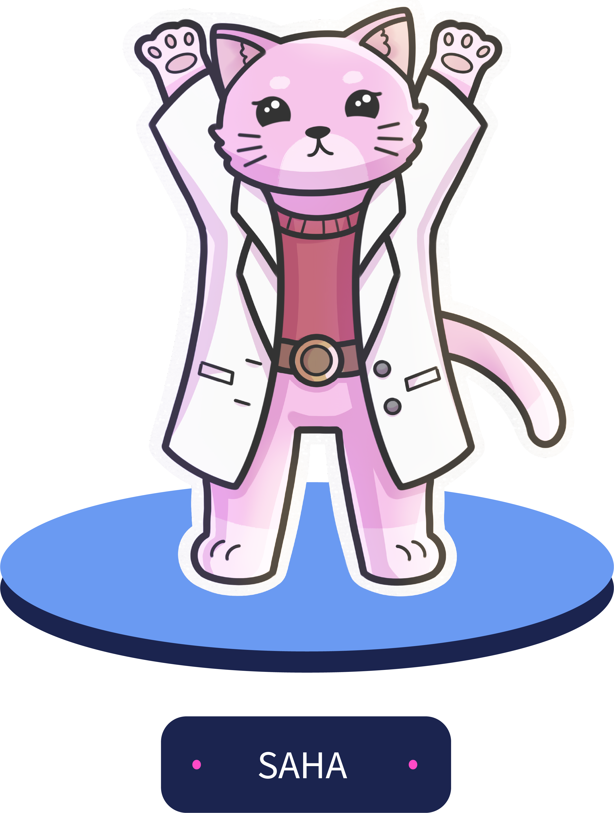

<!DOCTYPE html>
<html lang="en"></html>
<head>
    <link rel="icon" type="Icono.ico" href="img/Icono.ico" size="32x32">
    <meta charset="UTF-8">

    <title>SciCat</title>
    <script src="https://kit.fontawesome.com/43c554ce25.js" crossorigin="anonymous"></script>
    <link rel="stylesheet" href="css/Inicio.css">
    <meta name="viewport" content="width=device-width, user-scalable=no, initial-scale=1.0, maximum-scale=1.0, minimum-scale=1.0">
</head>
<div class="body" id="body">

    <header id="header">

        <div class="header-content">
            <div class="menu" id="show-menu">
                <i class="fas fa-bars"></i>
                <h1>Menú</h1>
            </div>

            <div class="logo">
                
            </div>

            <div class="buscador">
                <i class="fas fa-search" id="icon-search"></i>
            </div>

        </div>

    </header>

    <div class="container-all" id="move-content">
        <div class="background">
        </div>
        <div class="container-cover">
            <div class="container-cover-1">
                <div class="texto">
                    <h1>Bienvenidos a</h1>
                </div>
                
                
                <div class="comencemos">
                    <div class="cohete">
                        
                    </div>
                    <b>Comencemos</b>
                </div>
                <i class="fas fa-chevron-down"></i>
            </div>
            
            <div class="container-cover-2">
                
                <div class="que-es-scicat">
                    ¿Qué es SciCat?
                </div>
                <div class="lo-que-somos">
                    <i class="fas fa-graduation-cap"></i>
                    <div class="texto">
                        <p>Somos un grupo de apoyo estudiantil</p>
                        <p>creado por y para estudiantes que nace de</p>
                        <p>la necesidad de bla bla</p>
                        </div>
                </div>
                <div class="redes">
                    <a href="#"><i class="fab fa-instagram icon-redes-top" id="fa-instagram-square"></i></a>
                    <a href="#"><i class="fab fa-spotify icon-redes-top" id="fa-spotify"></i></a>
                    <a href="#"><i class="fab fa-discord icon-redes-top" id="fa-discord"></i></a>
                    <a href="#"><i class="fab fa-youtube icon-redes-top" id="fa-youtube"></i></a>
                </div>
            
            </div>
        </div>
        
        <div class="container-info">
            <div class="gatos">
                <div class="absolute-text">
                    <p>Conoce a nuestros</p>
                    <h1>GATOS AYUDANTES</h1>
                </div>
                
                <div class="imagenes">
                    <div class="doppler">
                        
                    </div>
                    <div class="cooper">
                        
                    </div>
                    <div class="saha">
                        
                    </div>
                </div>
                <i id="left-arrow" class="fas fa-caret-left"></i>
                <i id="right-arrow" class="fas fa-caret-right"></i>
                <div class="gray">

                </div>
            </div>
            <div class="noticias">

            </div>
            <div class="articulos">

            </div>
            <div class="comunidad">

            </div>
        </div>
        <div class="footer">

        </div>

    </div>
    
</div>
<script src="js/Inicio.js"></script>
</div>

</html>